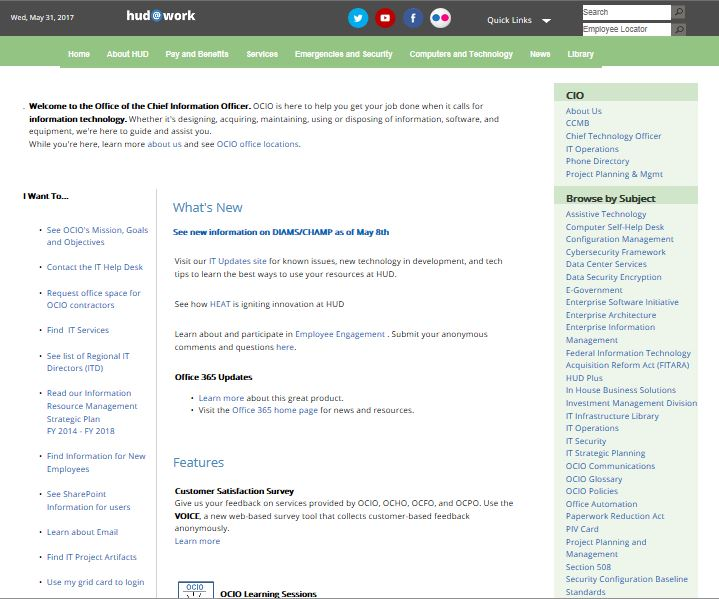
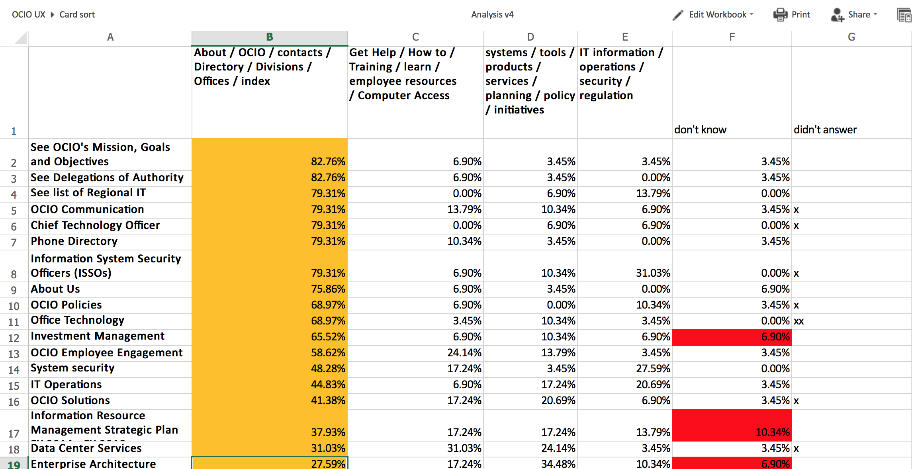
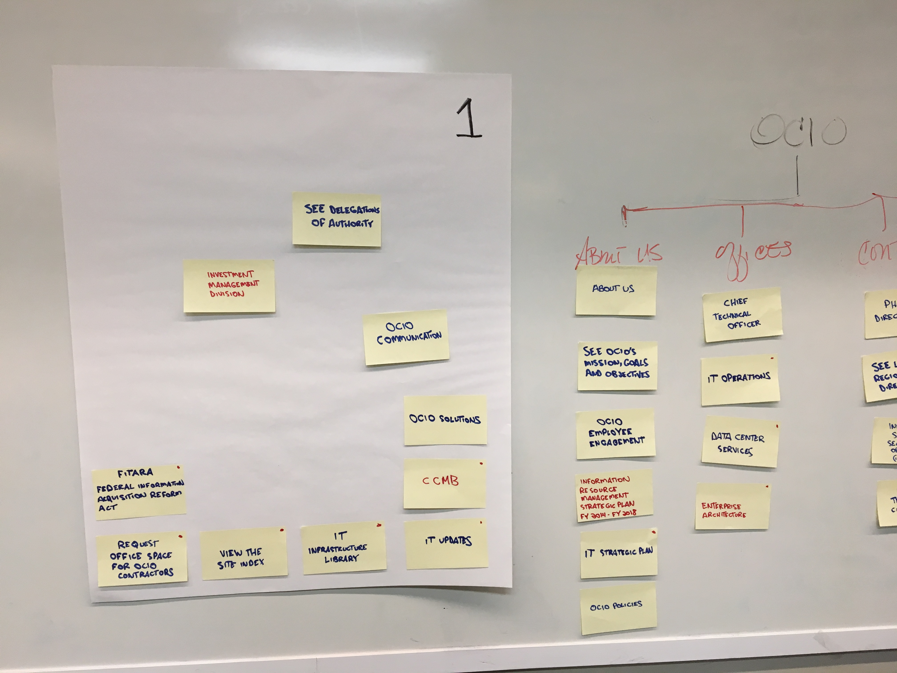
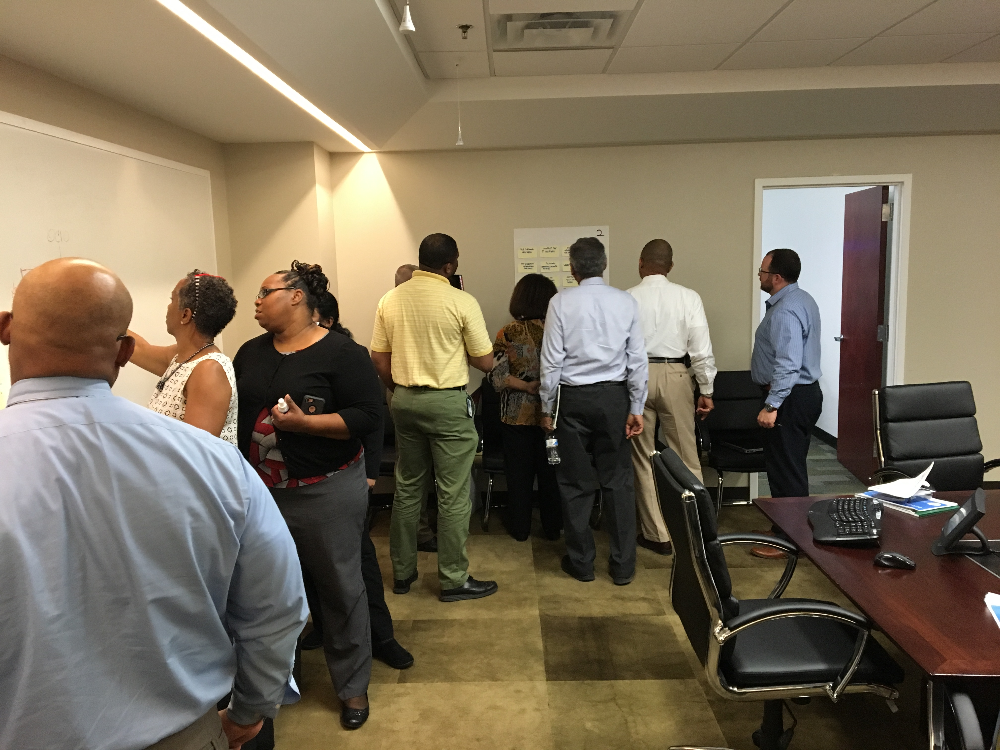
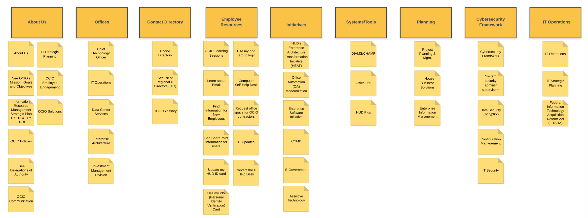
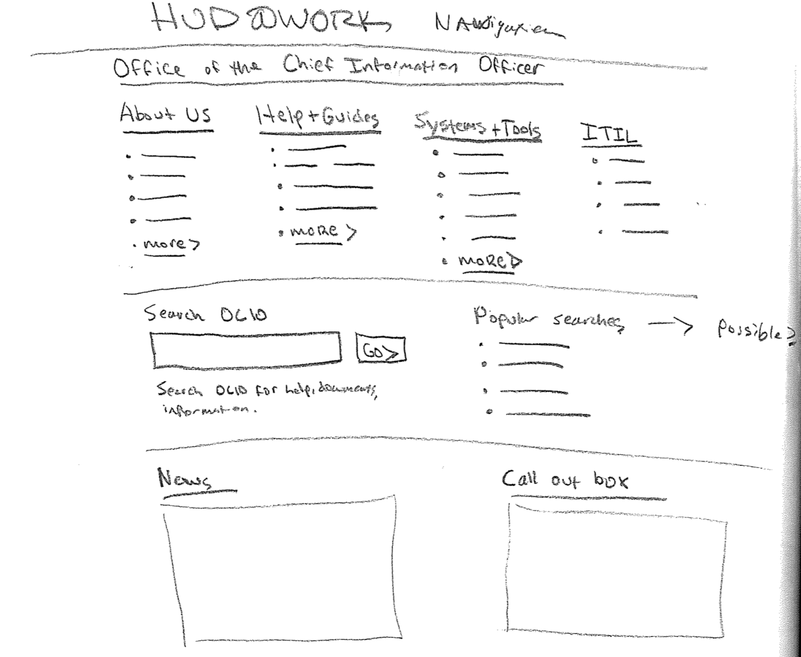
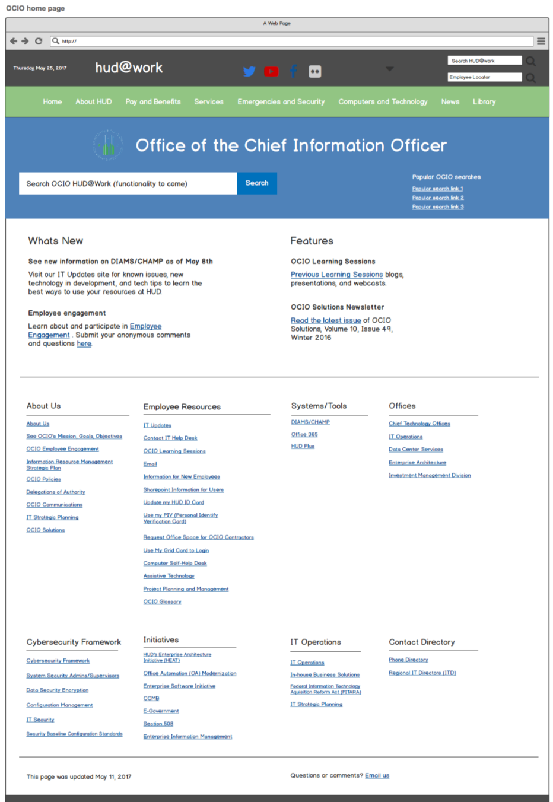

Redesign the Office of the Chief Information Officer (OCIO) intranet homepage to make it easier for its users to find and discover content.
An improved home page that groups content by topic rather than just one long, A-Z list of links.
Redesigns of home pages are always fun and interesting to take on. However, it seldom happens that a visual facelift of a webpage without uncovering true insights as to why something isn't working results in an improved way to find content.
My first step was to meet with staff members in charge of updating and managing the intranet to find out more information. I discovered through meeting with its web managers that the process of getting content approved, updated, or removed from the intranet was slow, cumbersome, and required manual review and HTML hacks.
To further explore this insight, I then met with content experts in charge of specific parts of the OCIO intranet to get their take. I spoke with 3 content experts from different program offices to weigh in on their editing and approval process and interacting with web managers.
It was discovered that content updates are generally done quarterly, the process is smooth as is, and if anything, there’s sometimes a bit of back and forth in email. Content experts were happy with the current process and didn’t see a need to change it.
This was an important insight for this project because we didn’t spend any more time brainstorming ways to improve the content process. This also illustrates that experience design must always start with research phase even if it’s small, with limited time and users. Talking with someone is always better than just assuming the problem and going direct to solutions.

However, I did hear from web managers and the content experts that we interviewed was that OCIO content was difficult to find, names of links contained jargon, and it wasn’t clear how get to the information one needed. Another pain point was that the search function of the intranet was terrible. However, the search function was part of the CMS features and was unable to be fixed.
"Other offices have better solutions to content navigation than OCIO."
To help diagnose these content findability problems and to improve them, my colleague and I decided to conduct an open card sort.
An open card sort was chosen vs. closed because we were interested in uncovering what staff would name groups of content rather than testing existing names.
We introduced the idea of a card sort to more than 30 staff members across departments, geographies, and seniority. We asked for help from as many staff we could gather to as card sorts produce great insights with 10+ people.
Since we are a remote team, we did a content inventory of area link on the intranet home page, added it to an Excel document, and then distributed to each participant with a short introduction of what is a card sort and how to do it using Excel. While a tool specifically made for card sorts would have been nice to use, we were working with no budget and low ressources, so Excel proved to be okay.
After each participant finished their card sort, we set out to synthesis each sort and identify any patterns that emerged. This was the slowest part of the project since we just used Excel and a lot of color coding; however, clear patterns did emerge about how staff expect to navigate OCIO content, where certain links should be, and which links had no information scent because of jargon or technical naming.

At this point, we had a new information architecture for the intranet page, but we wanted to validate our findings with OCIO members who would be in a bi-monthly department update meeting and also give HQ staff a chance to participate. We had mostly collected feedback from field staff up to this point.


We presented an overview of the work we did on the intranet redesign so far, and then asked staff to split into 4 groups where we gave them each a category that we identified in the Excel insights. Each category had several links that we thought, based on the open card sort, would fit under that category. We then asked each group to review their category name and links and suggest improvements, if any.
This workshop was a great success because some naming conventions were identified as wrong, some links needed to be cross-posted to other categories (NN/g suggests this), and some links were renamed back to the ‘jargon’ term because the only people who would click those links would already know what they meant.

With the workshop finished and our IA updated, we could start prototyping what the new intranet home page could look like.
I started on paper as I usually like to do to quickly get down ideas so that I don’t forget and so that I can evaluate what may work within the technical limits of the CMS.

After some sketching with good ol’ pen and paper, I moved to low-fi sketches in Balsamiq Mockups. Again, I like to move fast when designing and evaluate several options in parallel. I don’t like producing high fidelity mockups if there’s isn’t a specific and necessary reason to do so. By high-fidelity, I mean pixel-perfect designs. Adding in colors, clicks, transitions or dummy data is okay to do as long as it progresses the project and not hinder improvement.

These design ideas come directly from:
"The 4 column layout design of the homepage makes it easy to find information listed under each category."
After a couple iterations of prototypes, the designs were handed off to the external contractor to make home page changes. As mentioned before, the search function could not be improved; however, the contractor was able to change the search field’s functionality to return only OCIO content instead of content across the entire HUD intranet site (which is a lot).
After going live, we received positive feedback from staff members. Staff liked having the content still all accessible from one page (like the previous A-Z index) but now the content was grouped by topic instead of just one list.
We wanted to measure the response to the redesign going live, so we created a survey to quantitatively gauge the success of the redesign. We asked questions about the visual design of the page and the ease of finding and understanding content. We have 16 responses so far, so it’s hard to quantitatively show that the redesign helped. However, survey respondents generally do like the the new visual design, and they report that content is actually easier to find.